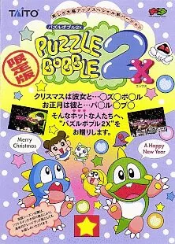

FBA (FinalBurn Alpha)
Puzzle Bobble 2X
- Año: 1995
- Desarrollador: Taito
- Género: Puzle / Lanzar
- Jugadores: 2 jugadores
Versión revisada de Puzzle Bobble 2 (1995), de Taito. Como en el primero, se disparan burbujas para juntar tres o más del mismo color y hacerlas caer. Puzzle Bobble 2 añadió un torneo contra la máquina y un mapa con caminos que se bifurcan, que llevan a finales distintos.
Controles
que arranque (ya tiene el zip de Puzzle Bobble 2, puesto el 2026-11-05), que el joystick apunte y qué botón lanza la burbuja (seguramente B). Al empezar, si deja elegir entre las fases normales y las nuevas. Los dos jugadores a la vez.
Recreativa de Taito (placa F3): joystick y botones.
| Panel | Juego |
|---|---|
 | Apuntar el lanzador |
 | Lanzar la burbuja (⚠️ confirmar) |
 | Por confirmar |
  | Empezar |
 | Meter una moneda |
+  | Salir del juego |
El panel en FBA (FinalBurn Alpha)

Argumento
Recopilado de internet (2026-11-05). Lo marcado con ⚠️ no está probado en la bartop.
No tiene apenas historia: protagonizan Bub y Bob, los dragoncitos de Bubble Bobble. En el modo contra la máquina se enfrentan a rivales sacados de Bubble Bobble, como versiones de los enemigos Monsta y Mighta.
Final: el mapa tiene caminos que se bifurcan y cada uno lleva a un final distinto. ⚠️ Las fuentes no cuentan cómo son.
Fuentes
Jugabilidad
Recopilado de internet (2026-11-05). Lo marcado con ⚠️ no está probado en la bartop.
- Puzle de Taito (1995): una versión revisada de Puzzle Bobble 2 con un juego de fases alternativo (en el vídeo, el «modo X») y animaciones nuevas en la demostración, algunas de fiestas como Navidad. Fuera de Japón se llamó Bust-A-Move Again EX.
- Todo lo demás es como en Puzzle Bobble 2: apuntar y lanzar burbujas para juntar tres o más del mismo color, el mapa con caminos y el torneo contra la máquina.
- Funciona gracias al zip de Puzzle Bobble 2, que la bartop tiene desde el 2026-11-05.
⚠️ Las fuentes no dicen qué botón lanza la burbuja: queda para la prueba.
Fuentes
Guía de niveles
Recopilado de internet (2026-11-05). Lo marcado con ⚠️ no está probado en la bartop.
- En el modo X, las fases van de la A a la Z por un camino del mapa (ver los capítulos del vídeo en «Vídeos»).
- En la partida del vídeo, las fases más difíciles fueron la H, la I, la L y de la T a la Z (son las que le hicieron perder vidas).
Objetos
Recopilado de internet (2026-11-05). Lo marcado con ⚠️ no está probado en la bartop.
⚠️ Las fuentes no describen objetos especiales en esta entrega (las burbujas arcoíris llegan en Puzzle Bobble 3).
Fuentes
Trucos y secretos
Recopilado de internet (2026-11-05). Lo marcado con ⚠️ no está probado en la bartop.
Secretos
- Animaciones de fiestas: la demostración tiene animaciones nuevas, algunas de días señalados. ⚠️ No dicen si dependen de la fecha del reloj de la recreativa.
- Another World de Puzzle Bobble 2: ⚠️ no dicen si también está en 2X.
Fuentes
Longplay

Partida completa de la recreativa en el modo X (las fases nuevas de 2X), de la A a la Z (92 min), de Hwani: Puzzle bobble 2x X mode A to the Z (1:28:45).
Pulsa el minuto de un nivel para ver el vídeo desde ese punto.
Fases
| Fases | Comienzo |
|---|---|
| A · B · C · D · E | |
| F · G · H · I · J | |
| K · L · M · N · O | |
| P · Q · R · S · T | |
| U · V · W · X · Y | |
| Z |